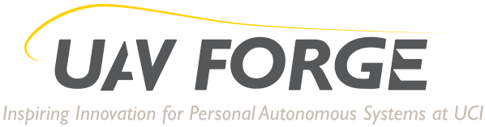

Project Nimble is a team project for ICS 169 - Capstone Game Project. My team consists of 5 people and we are creating an Android Mobile Game where it tests your coordination by giving you Dust Bunnies to get rid of by slashing, tapping, and shaking your phone.

UAV Forge Project is a collaboration between Engineering and ICS students at UCI. Our goal is to create an Unmanned Aerial Vehicle that can be controlled by a GroundStation. I am part of an 8 man GUI team, and we were in charge of the design of the Groundstation. The project is still ongoing, and this year, we are buillding a quadcopter tilt rotor, and trying to connect the quadcopter with the Groundstation.

Autism App Jam was a competition to raise awareness for autism. My team consisted of 5 people, and we were creating a mobile application that would help parents in assisting their children in their daily lives.

American Heart Association Game Jam was a competition to raise awareness for heart diseases and problems. This project had 9 members on it, and our project was a mobile game that would help teach about heart diseases and problems through mini games. We had a few weeks to complete our game, but in the end, we got 3rd place.

Daybreak was a game created for the Video Game Design Club Fall Game Jam. My team had 11 people, and we were to finish a game in 7 days. Our game took place in a cemetary, where the main protagonist had to escape by destroying tomb stones during the day. However, once night falls, the ghosts come out of their tombstones and try to hunt down the main character. Our game took first place!